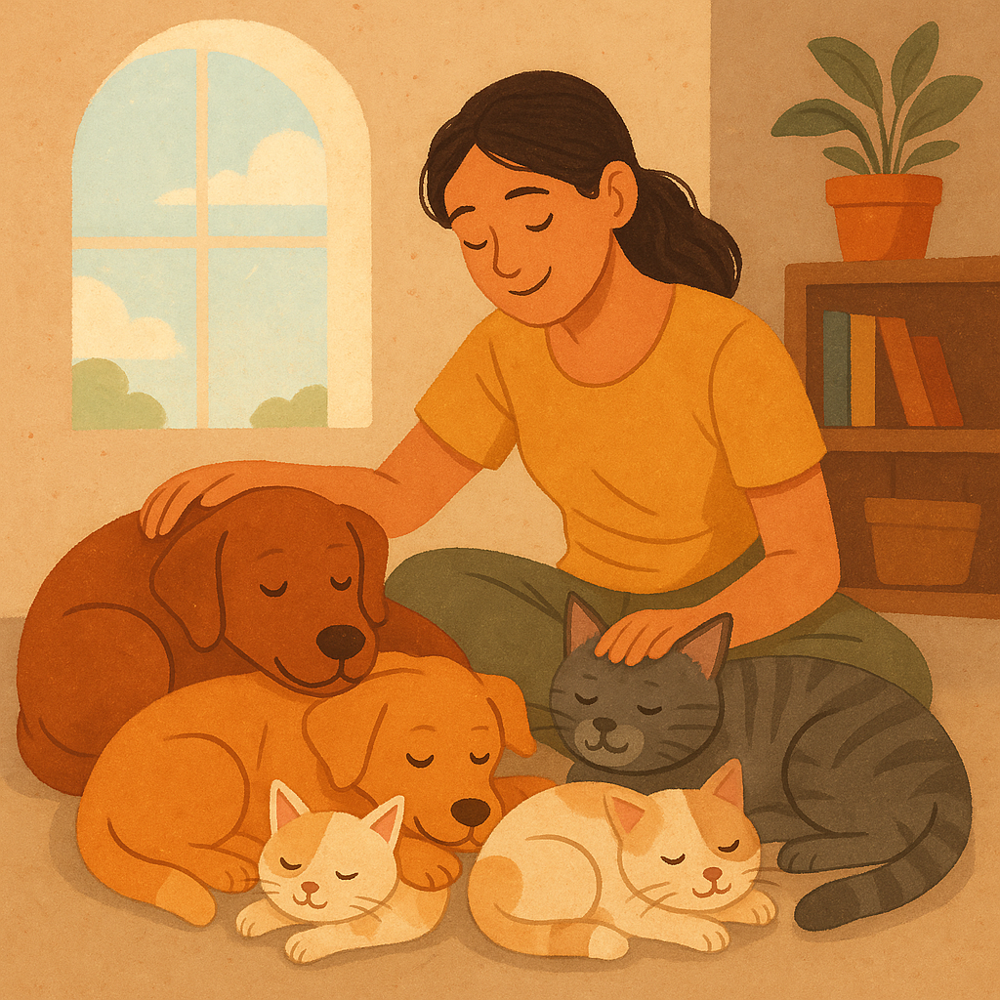
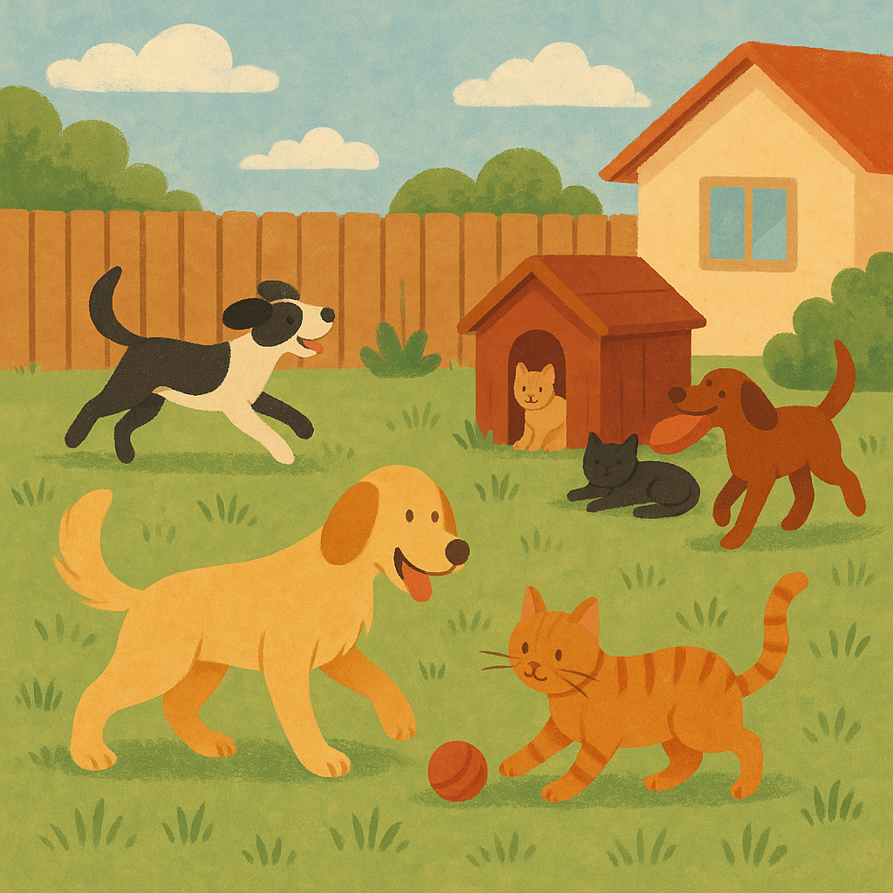
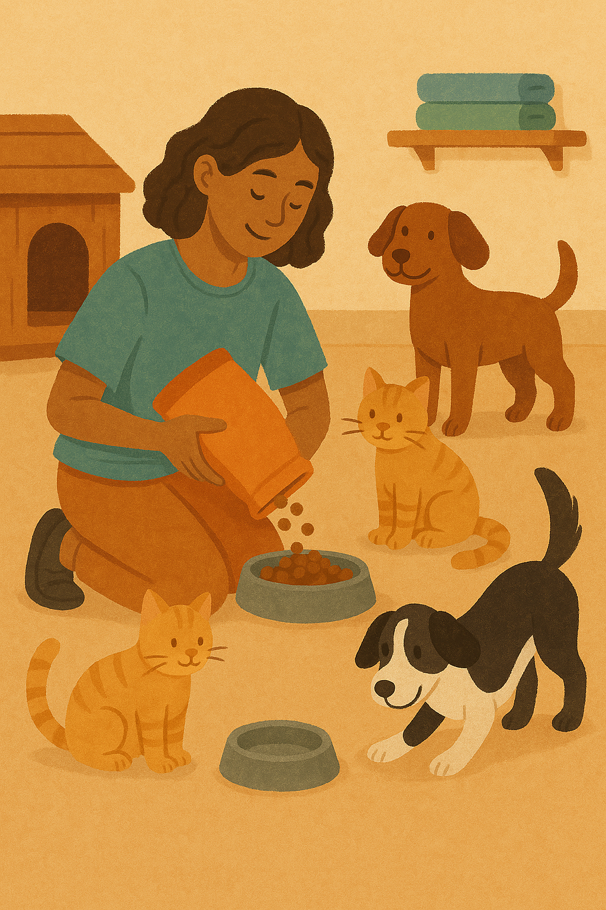

Nossos Projetos 🐕🐈

Projeto Adoção com Amor
Nosso principal projeto! Promovemos feiras de adoção, vacinação e conscientização sobre guarda responsável de pets.
Adote um amigo

Projeto Pet Resgate
Equipe voluntária que atua em resgates de animais em situação de rua e maus-tratos, garantindo atendimento veterinário e acolhimento.
Seja voluntário

Projeto Lar Temporário
Parceiros e famílias acolhem pets até que encontrem um lar definitivo, garantindo amor e segurança durante o processo.
Ofereça um lar